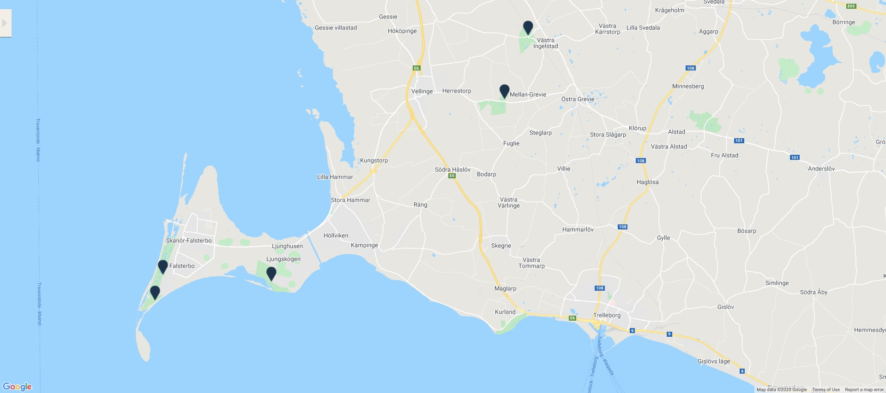

<!DOCTYPE html>
<html lang="sv-se">
<meta name="viewport" content="width=device-width">

   <head>
      <title>plugin-map</title>
      <link href='http://fonts.googleapis.com/css?family=Lato:400,700' rel='stylesheet' type='text/css'>
      <link rel="stylesheet" href="./style.css" type="text/css" />
      <script src="./GBJSTK.js"></script>
      <script src="./script.js"></script>
      <style>
          html {
         background-color: #F5F1E9;

          }
        .iframe-preview-2 {
        margin-top: -100px;
        z-index: -1;
        border: 0px;
        }
        /*
        @media only screen and (orientation:portrait) and (max-width:599px),
             only screen and (orientation:landscape) and (max-width:959px) {
           
            .iframe-preview-2 {
                visibility: hidden;

            }

            }*/

     body {
     margin: 0px;
     color: #F5F1E9;
     }

    .img-map {
        margin-left: 600px;
        height: 100%;
        margin-top: 90px;

    }
      </style>
   </head>
   <body>
<div style=" width: 100%; height: 100px; position: absolute; background-color:#F5F1E9;z-index: 1;">
    <!---->
</div>
    <div>
<!--<button onclick="gbGoToSection(32154410);">Click aqui</button>-->
</div>


<div style="height: 1100px; width: 599px; position: absolute;background-color: #F5F1E9; margin-left: 0px; margin-top: 0px;">
    <iframe class="iframe-preview-2" width="595" height="1100px" src="./mapv5-copy.html" frameBorder="0"" style="z-index: -100;"></iframe>

</div>

<div style="height:100% width: 100%; margin-top:0px; position: absolute">

    
    <!--<iframe class="iframe-preview-1" width="100%" height="1000" src="./mapv5-copy.html" frameBorder="0"></iframe>-->
    </div>
   
   
</body>
</html>